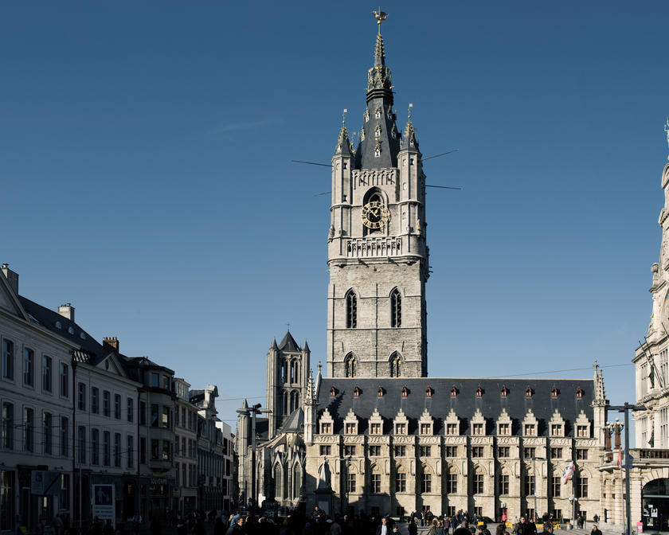
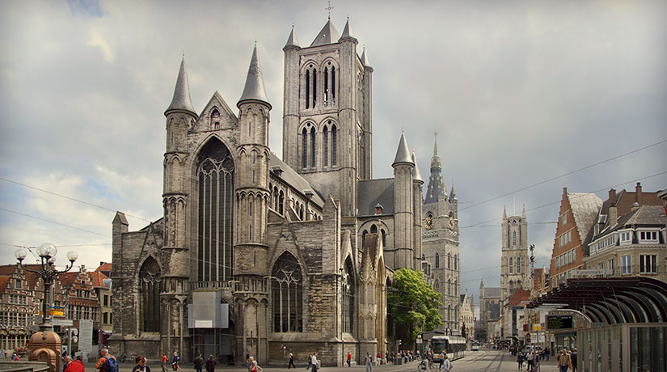

Gante

Dominique: Estos son los lugares imprescindibles de Gante, clasificados según nuestros gustos y criterio. La guía más completa de gante para no perderte nada.
Desde lo alto de la torre de 91 metros de alto, el legendario “Dragón de Gante” vela por los ganteses y vigila con celo y ferozmente los privilegios de la ciudad.
El ayuntamiento de Gante encaja con la filosofía de la ciudad: la mezcla y convivencia de estilos. Cuando nos paramos frente a este edificio, con un “trastorno de doble personalidad”, nos damos cuenta que una ciudad con ayuntamiento tan peculiar, tiene que ser, a la fuerza, una ciudad peculiar.
La iglesia de San Nicolás, perfecto ejemplo del gótico del Escalda, mira a la plaza Korenmarkt y completa la fantástica línea de torres de la ciudad de Gante, la ciudad de las tres torres.
Desde uno de los lugares más visitados de Gante, podrá disfrutar de las tranquilas aguas del río Lis y de la historia de Gante a través de los siglos contada silenciosamente por las fachadas de las casas de este puerto medieval
INICIO
ACERCA DE
DESTINOS
BLOG
CONTACTO